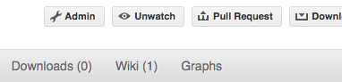

Git tips#
Rebasing on main#
This updates your feature branch with changes from the upstream SciPy github repo. If you do not absolutely need to do this, try to avoid doing it, except perhaps when you are finished. The first step will be to update the remote repository with new commits from upstream:
git fetch upstream
Next, you need to update the feature branch:
# go to the feature branch
git checkout my-new-feature
# make a backup in case you mess up
git branch tmp my-new-feature
# rebase on upstream main branch
git rebase upstream/main
If you have made changes to files that have changed also upstream, this may generate merge conflicts that you need to resolve. See below for help in this case.
Finally, remove the backup branch upon a successful rebase:
git branch -D tmp
Note
Rebasing on main is preferred over merging upstream back to your
branch. Using git merge and git pull is discouraged when
working on feature branches.
Recovering from mess-ups#
Sometimes, you mess up merges or rebases. Luckily, in Git it is relatively straightforward to recover from such mistakes.
If you mess up during a rebase:
git rebase --abort
If you notice you messed up after the rebase:
# reset branch back to the saved point
git reset --hard tmp
If you forgot to make a backup branch:
# look at the reflog of the branch
git reflog show my-feature-branch
8630830 my-feature-branch@{0}: commit: BUG: io: close file handles immediately
278dd2a my-feature-branch@{1}: rebase finished: refs/heads/my-feature-branch onto 11ee694744f2552d
26aa21a my-feature-branch@{2}: commit: BUG: lib: make seek_gzip_factory not leak gzip obj
...
# reset the branch to where it was before the botched rebase
git reset --hard my-feature-branch@{2}
If you didn’t actually mess up but there are merge conflicts, you need to resolve those. This can be one of the trickier things to get right. For a good description of how to do this, see this article on merging conflicts.
Rewriting commit history#
Note
Do this only for your own feature branches.
There’s an embarrassing typo in a commit you made? Or perhaps the you made several false starts you would like the posterity not to see.
This can be done via interactive rebasing.
Suppose that the commit history looks like this:
git log --oneline
eadc391 Fix some remaining bugs
a815645 Modify it so that it works
2dec1ac Fix a few bugs + disable
13d7934 First implementation
6ad92e5 * masked is now an instance of a new object, MaskedConstant
29001ed Add pre-nep for a copule of structured_array_extensions.
...
and 6ad92e5 is the last commit in the main branch. Suppose we
want to make the following changes:
Rewrite the commit message for
13d7934to something more sensible.Combine the commits
2dec1ac,a815645,eadc391into a single one.
We do as follows:
# make a backup of the current state
git branch tmp HEAD
# interactive rebase
git rebase -i 6ad92e5
This will open an editor with the following text in it:
pick 13d7934 First implementation
pick 2dec1ac Fix a few bugs + disable
pick a815645 Modify it so that it works
pick eadc391 Fix some remaining bugs
# Rebase 6ad92e5..eadc391 onto 6ad92e5
#
# Commands:
# p, pick = use commit
# r, reword = use commit, but edit the commit message
# e, edit = use commit, but stop for amending
# s, squash = use commit, but meld into previous commit
# f, fixup = like "squash", but discard this commit's log message
#
# If you remove a line here THAT COMMIT WILL BE LOST.
# However, if you remove everything, the rebase will be aborted.
#
To achieve what we want, we will make the following changes to it:
r 13d7934 First implementation
pick 2dec1ac Fix a few bugs + disable
f a815645 Modify it so that it works
f eadc391 Fix some remaining bugs
This means that (i) we want to edit the commit message for
13d7934, and (ii) collapse the last three commits into one. Now we
save and quit the editor.
Git will then immediately bring up an editor for editing the commit message. After revising it, we get the output:
[detached HEAD 721fc64] FOO: First implementation
2 files changed, 199 insertions(+), 66 deletions(-)
[detached HEAD 0f22701] Fix a few bugs + disable
1 files changed, 79 insertions(+), 61 deletions(-)
Successfully rebased and updated refs/heads/my-feature-branch.
and the history looks now like this:
0f22701 Fix a few bugs + disable
721fc64 ENH: Sophisticated feature
6ad92e5 * masked is now an instance of a new object, MaskedConstant
If it went wrong, recovery is again possible as explained above.
Deleting a branch on github#
git checkout main
# delete branch locally
git branch -D my-unwanted-branch
# delete branch on github
git push origin :my-unwanted-branch
(Note the colon : before test-branch. See also:
guides/remove-a-remote-branch
Several people sharing a single repository#
If you want to work on some stuff with other people, where you are all committing into the same repository, or even the same branch, then just share it via github.
First fork SciPy into your account, as from Making your own copy (fork) of SciPy.
Then, go to your forked repository github page, say
https://github.com/your-user-name/scipy
Click on the ‘Admin’ button, and add anyone else to the repo as a collaborator:

Now all those people can do:
git clone git@github.com:your-user-name/scipy.git
Remember that links starting with git@ use the ssh protocol and are
read-write; links starting with git:// are read-only.
Your collaborators can then commit directly into that repo with the usual:
git commit -am 'ENH - much better code'
git push origin my-feature-branch # pushes directly into your repo
Exploring your repository#
To see a graphical representation of the repository branches and commits:
gitk --all
To see a linear list of commits for this branch:
git log
You can also look at the network graph visualizer for your github repo.
Backporting#
Backporting is the process of copying new feature/fixes committed in
scipy/main back to stable release branches. To do this you make a branch
off the branch you are backporting to, cherry pick the commits you want from
scipy/main, and then submit a pull request for the branch containing the
backport.
First, you need to make the branch you will work on. This needs to be based on the older version of SciPy (not main):
# Make a new branch based on scipy/maintenance/1.8.x, # backport-3324 is our new name for the branch. git checkout -b backport-3324 upstream/maintenance/1.8.x
Now you need to apply the changes from main to this branch using git cherry-pick:
# Update remote git fetch upstream # Check the commit log for commits to cherry pick git log upstream/main # This pull request included commits aa7a047 to c098283 (inclusive) # so you use the .. syntax (for a range of commits), the ^ makes the # range inclusive. git cherry-pick aa7a047^..c098283 ... # Fix any conflicts, then if needed: git cherry-pick --continue
You might run into some conflicts cherry picking here. These are resolved the same way as merge/rebase conflicts. Except here you can use git blame to see the difference between main and the backported branch to make sure nothing gets screwed up.
Push the new branch to your Github repository:
git push -u origin backport-3324
Finally make a pull request using Github. Make sure it is against the maintenance branch and not main, Github will usually suggest you make the pull request against main.
Pushing changes to the main repo#
This is only relevant if you have commit rights to the main SciPy repo.
When you have a set of “ready” changes in a feature branch ready for
SciPy’s main or maintenance branches, you can push
them to upstream as follows:
First, merge or rebase on the target branch.
Only a few, unrelated commits then prefer rebasing:
git fetch upstream git rebase upstream/main
See Rebasing on main.
If all of the commits are related, create a merge commit:
git fetch upstream git merge --no-ff upstream/main
Check that what you are going to push looks sensible:
git log -p upstream/main.. git log --oneline --graph
Push to upstream:
git push upstream my-feature-branch:main
Note
It’s usually a good idea to use the -n flag to git push to check
first that you’re about to push the changes you want to the place you
want.